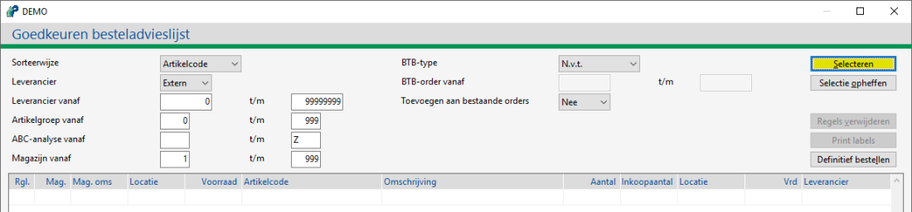
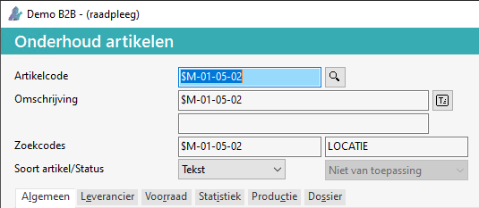
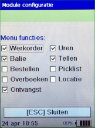
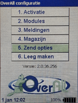

Open onderwerp met navigatie
Barcode scanner Memor X3
De volgende onderwerpen worden behandeld:
Uitlezen barcodescanner / Verwerken barcode scanningen
Menuopties Datalogic Memor X3 scanner
In het hoofdmenu staan de volgende opties:
- Werkorder
- Balie
- Bestellen
- Tellen
- Verzenden, dit gebeurt automatisch via WiFi.
Hieronder worden het gebruik van deze functies verder uitgelegd.
Werkorder
-
Kies in het hoofdmenu optie 1. Werkorder, of toets een <1> in (op het toetsenbord).
-
Scan vervolgens de barcode op de werkorder.
-
Kies voor de knop ENT.
-
Voer je eigen <personeelscode> in.
-
Kies voor de knop ENT.
-
Scan de artikel barcode.
-
Voer het <aantal> in.
-
Kies voor de knop ENT.
-
Klaar met scannen?
Deze scanning wordt automatisch verwerkt in de werkorder.
Belangrijk: Controleer wel altijd op de pc waar de uitleesfunctie actief staat of betreffende artikelen wel bestaande nummers zijn.
Balie
-
Kies in het hoofdmenu optie 2. Balie of toets een <2> in.
-
Scan de artikelcode.
-
Voer <aantal> in.
-
Kies voor de knop ENT.
-
Klaar met scannen?
-
Ga naar de PC waar de uitleesfunctie actief staat. Hier is het invoer bonnenscherm automatisch geopend.
-
Voer de <relatiecode> in.
-
Druk 2x op Enter (nu worden de gescande artikelen automatisch toegevoegd aan deze bon).
Rond de baliebon af, indien gewenst.
Bestellen
-
Kies in het hoofdmenu optie 3. Bestellen (of toets een <3> in).
-
Scan de artikelcode.
-
Voer het te bestellen aantal in.
-
Kies voor de knop ENT.
-
Klaar met scannen?
-
Betreffende bestelregels zijn beschikbaar in Powerall Connect.
-
Belangrijk: Onderstaand geldt alleen als de optie centraal inkooporders aanmaken ja is en besteladvies inkoop order maken is ja.
• Er kan ook ingesteld zijn dat deze rechtstreeks in een inkooporder komt of dat deze toegevoegd wordt aan een openstaande.
-
Ga naar Selecteren inkooporders (IS).
-
Kies voor de knop Bestelregels.
-
Geef indien gewenst selectie in: Kies voor de knop Selecteren.

-
De bestelregels kunnen omgezet worden naar inkooporders.
Tellen
-
Kies in het hoofdmenu optie 4. Tellen of toets een <4> in.
-
Voer het <weeknummer> in.
-
Kies voor de knop ENT.
-
Voer je eigen < personeelscode > in.
-
Kies voor de knop ENT.
-
Scan artikelcode.
-
Voer te bestellen <aantal> in.
-
Kies voor de knop ENT.
-
Klaar met scannen?
De voorraadcorrectie wordt automatisch doorgevoerd.
Belangrijk: Wanneer een artikel op meerdere plekken ligt of meerdere keren gescand wordt, geldt de laatste scanning!
Module Locatie
Voorwaarde: Deze module moet geactiveerd worden, zie Instellingen > Modules.
Bij de inrichting of wijziging van een magazijn is het mogelijk om artikelen op bepaalde locaties te scannen en deze daarna bij te werken in Powerall Connect.
Belangrijk: Het locatieartikelcode moet beginnen met een $-teken.
Er kan een tekstartikel aangemaakt worden met een artikelcode $-teken gevolgd door het locatienummer.
 Klik hier voor meer informatie over de opbouw van een locatienummer:
Klik hier voor meer informatie over de opbouw van een locatienummer:
Locatienummer: M-01-05-02, toelichting:
| M |
aanduiding van welk magazijn (W zou bijv. Winkel kunnen zijn). |
| 01 |
aanduiding voor stellingrij. |
| 05 |
aanduiding voor stellingnummer in deze rij. |
| 02 |
aanduiding voor legplank in deze stelling (van bovenaf gerekend). |
De artikelcode wordt: $M-01-05-02.

Selecteer bij soort artikel tekst.
De werkwijze is als volgt:
-
Optie Locatie.
-
Scan de locatielabel.
-
Scan de artikelen die op deze locatie liggen.
-
Sluit af door de volgende acties:
- Kies voor de knop ENT.
- Kies voor de knop ESC.
-
Vervolgens wordt het bestand uitgelezen en wordt de locatie van gescande artikelen aangepast.
Opmerking: Voor de barcode van de locatielabels, raadpleeg de helpdesk.
Instellingen
Om de instellingen te wijzigen, doorloopt u de volgende stappen:
-
Zet de scanner in het uitleestation en ga naar het Hoofdmenu.
-
Druk in het hoofdmenu op F2 toets.
- Het scherm Powerall configuratie verschijnt.
-
Menu opties:
-
1. Activate: wordt gebruikt bij de installatie op de scanner.
-
2. Modules: hier kunnen de opties in het hoofdmenu ge(de)activeerd worden.

-
3. Meldingen: je kunt hier een melding aanzetten als de scanner meerdere dagen niet uitgelezen is.
-
4. Magazijnen: hier kan eventueel het standaard magazijn gewijzigd worden.
-
5. Zend opties Om het netwerk in te stellen:

zendopties
-
Selecteer Netwerk/Wifi
-
Vul het IP-adres van de Powerall Connect server in (bijv. 192.168.1.3 of SRV01), bijv.
-
Druk op de Test knop.
-
Selecteer het Standaard werkstation, bijv. Winkel of Werkplaats.
-
Leeg maken: hier kan je alle scanningen verwijderen van de scanner (kan je gebruiken als de scanner bijvoorbeeld langere tijd niet meer gebruikt is en je zeker wilt zijn dat er geen onnodige scanningen naar boven komen).
FAQ
Gerelateerde onderwerpen
Copyright © 1990-2026 Beaver Creek Technology B.V. Disclaimer
{kind=link}
{kind=link}